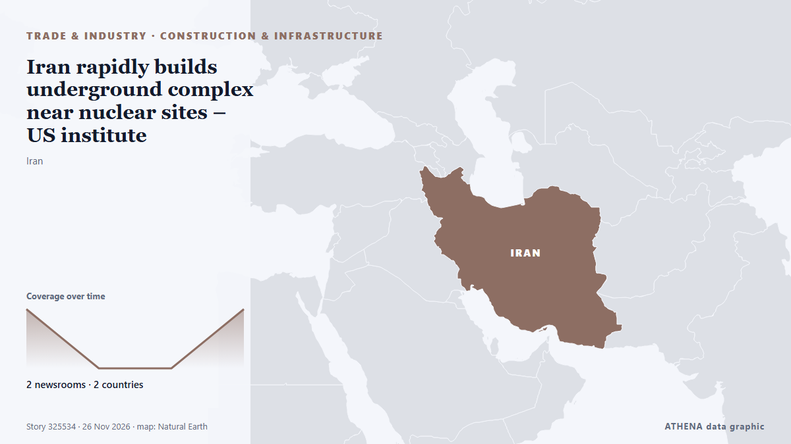

Εμπόριο, Βιομηχανία & Υποδομές
ΧορηγούμενοΠαρουσιάζεται από  Cybernetics and Artificial Intelligence Lab Welcome to the Cybernetics and Artificial Intelligence Laboratory, established at the Department of Business Administration of the National and Kapodistrian University of Athens. The lab is headed by Professor Dimitrios Thomakos. The lab aims to do research that can be published in top venues. Our research uses tools and methods of Artificial Intelligence, and lies in the following areas: - Forecasting - Decision making - Cyber security - Finance We are always looking forward to collaborating with exceptional students!
Cybernetics and Artificial Intelligence Lab Welcome to the Cybernetics and Artificial Intelligence Laboratory, established at the Department of Business Administration of the National and Kapodistrian University of Athens. The lab is headed by Professor Dimitrios Thomakos. The lab aims to do research that can be published in top venues. Our research uses tools and methods of Artificial Intelligence, and lies in the following areas: - Forecasting - Decision making - Cyber security - Finance We are always looking forward to collaborating with exceptional students!
Οι τίτλοι των ειδήσεων παρουσιάζονται στα αγγλικά, όπως δημοσιεύτηκαν.

Κατασκευές & υποδομέςIran rapidly builds underground complex near nuclear sites – US institute
Iran is rapidly constructing a fortified underground complex between two of its main nuclear sites that could house weapons systems or infrastructure linked to its nuclear program, a Washington-based… από Iran International (English)
| 14 Νοε | 77 |
|---|---|
| 15 Νοε | 66 |
| 16 Νοε | 122 |
| 17 Νοε | 96 |
| 18 Νοε | 102 |
| 19 Νοε | 73 |
| 20 Νοε | 99 |
| 21 Νοε | 34 |
| 22 Νοε | 60 |
| 23 Νοε | 107 |
| 24 Νοε | 90 |
| 25 Νοε | 80 |
| 26 Νοε | 65 |
| 27 Νοε | 1 |
EU officially limits imports of Chinese hybrid vehicles
Brussels and Beijing agreed to limit exports of Chinese plug-in hybrids and other hybrid vehicles to the 27-nation bloc as part of a deal to avoid a trade war. από Free Malaysia Today
European Parliament seeks EU action over Turkey-Libya maritime deal
The European Parliament on Thursday asked EU governments to consider targeted sanctions on people or organizations that violate an EU member’s maritime rights by implementing a 2019 agreement between… από Turkish Minute
Japan, China trade accusations over ships near disputed islands
Japan and China have exchanged accusations over alleged intrusions by ships into waters near the disputed Senkaku/Diaoyu Islands, escalating longstanding diplomatic tensions. από Arab News
Russians attack Bila Tserkva, killing one person
Russian forces struck Bila Tserkva overnight, damaging an Epicentr shopping centre, a Nova Poshta delivery service branch and other businesses. από Ukrainska Pravda (English)
Thanksgiving has a bumpy history
The history of the American Thanksgiving holiday has evolved from early colonial feasts and Revolutionary War era proclamations to modern debates over its religious nature and official date. από The Hill
Flydubai To Resume Flights To Israel On December 3
The airline's flights to Israel had been suspended after one of its aircraft, travelling from Dubai to Tel Aviv, was forced to make an emergency landing in Saudi Arabia in September. από NDTV World
Belgium: Farmers and tractors descend on Brussels to defend EU subsidies
Around 200 representatives of European farming unions marched through Brussels, Belgium, on Thursday 26 November 2026 to protest against proposed cuts to the European Union's Common Agricultural… από Euronews English
Russian forces strike factory in Khmelnytskyi region
In the Khmelnytskyi district, a fire broke out on the premises of one of the enterprises as a result of a Russian attack. από Ukrinform (English)
'No structural excess capacity in any sector': India pushes back against US tariff allegations
India said on Wednesday that it remained committed to concluding a bilateral trade agreement with the US at the earliest. από Business Today India
Iran says 2 oil tankers hit naval mines, catch fire near Oman’s Khasab port
Iran’s Islamic Revolutionary Guard Corps (IRGC) Navy said on Thursday that two oil tankers hit naval mines and caught fire north of Oman’s Khasab port while attempting to “secretly” cross the Strait… από Middle East Monitor
Flydubai to resume Dubai–Tel Aviv flights from December 3 after two-month suspension
Flydubai will resume flights between Dubai and Tel Aviv on December 3 following a two-month suspension and approvals from the relevant authorities. από Arabian Business
Trump’s new tariffs aim to pry global trade from China’s grip
The United States’ latest tariff hikes are set to inflame trade tension with Beijing, making it… από BusinessWorld
Explained: How Trump’s proposed tariffs for India compare with rival nations
The United States has proposed a 25 percent tariff on Indian imports to address what it describes as excess industrial capacity. από The Kathmandu Post
Norwegian airline Norse Atlantic suspends flights, says bankruptcy imminent
Norwegian low-cost carrier Norse Atlantic, hit by surging jet fuel prices due to the war against Iran, said Thursday it was teetering on the verge of bankruptcy as it cancelled all flights for the… από The Local Norway
Vietnam seeks talks to lower proposed US tariffs under Section 301 investigation
Vietnam will pursue multiple channels of engagement and negotiations with the U.S. to reduce an additional tariff of up to 35 percent proposed by the Office of the U.S. από Tuoi Tre News
Iran prepares oil tanker convoy to break US naval blockade, threatens Gulf facilities - report
Iran is reportedly preparing a convoy of more than 14 oil tankers to challenge the US naval blockade, as media outlets close to the IRGC threaten attacks on Gulf energy infrastructure. από The Jerusalem Post
US Proposes 25% Tariff On India. It Could Come Down With Trade Deal
These new tariffs would not be added to existing ones aimed at combating forced labour or certain sector-specific tariffs, a senior US official said. από NDTV
US proposes surprise new tariffs on Brazil imports, including 10% duty on aircraft
Brazil’s government said Washington’s proposal was unacceptable and aimed to pressure Brazil into changing its regulatory measures. από The Straits Times
Malaysia benefits immensely as a trading nation by engaging with world leaders, says Anwar
KUALA LUMPUR, Nov 25 — Prime Minister Datuk Seri Anwar Ibrahim said Malaysia has benefited immensely as a trading nation... από Malay Mail
US announces fresh tariffs on China and several other trading partners
WASHINGTON DC: The United States has unveiled a new round of import tariffs targeting several countries and trading partners as President Donald Trump continues to advance his signature trade policy. από Khabarhub English
Afghan Fresh Fruit Exports Fall 88% as Trade Through Central Asia Grows
Afghanistan shipped $210 million worth of goods through Central Asia from April through September 2026, more than double the value. από The Times of Central Asia
CJP’s Saurav Das moves Delhi HC after being stopped from travelling to UK
The Ministry of External Affairs said the passport office had asked Das to respond to a notice over alleged discrepancies and not use the document until then. από Scroll.in
Everllence and COSCO SHIPPING Advance Fleet Digitalisation
On November 23, 2026, Everllence signed a Memorandum of Understanding (MoU) with China COSCO SHIPPING Corporation Limited (COSCO SHIPPING). από The Maritime Executive
APM Terminals Maasvlakte II and Port of Rotterdam Authority take next step in terminal development
APM Terminals Maasvlakte II and the Port of Rotterdam Authority are moving forward in terminal’s development with preparations for a. από Cyprus Shipping News
Maersk Orders 12 Ultra-Large Dual-Fuel Container Ships
Maersk has ordered 12 ultra-large container ships scheduled for delivery in 2030 and 2031, which will become the biggest vessels in its fleet, a company spokesperson said on Tuesday.The vessels, each… από MarineLink
IRGC Reports Three Tankers Exploded in Hormuz After Hitting Mines
Iran's Revolutionary Guards navy reported that three tankers exploded and caught fire in the Strait of Hormuz after striking naval mines ... από IranWire
Iran says it is not concerned about US naval blockade
Dubai: Iran is not concerned about the US naval blockade as cargo clearance through its non-southern borders has increased and reserves of strategic goods remain strong, First Vice President Mohammad… από Deccan Herald
Explosion occurs on LNG carrier in Strait of Hormuz
Ahmad Hayat-Moghaddam, Vice Chairman of the Iranian Parliament’s National Security and Foreign Policy Committee, announced on Tuesday, N ... από IranWire
Tata Steel shares rise 1%, APL Apollo falls 9% as brokerages turn cautious on ₹28,000 cr deal
Brokerages largely negative on APL Apollo, mixed on Tata Steel. από The Hindu BusinessLine
Hormuz crisis drives global energy supply shock
Disruptions to shipping through the Strait of Hormuz have triggered the world's largest energy supply shock, prompting Gulf producers to consider billions of… από Daily Tribune
Hagia Sophia's Hidden Tunnels Uncovered
Restoration work in Istanbul has uncovered 420 meters of underground passages, ancient water infrastructure and architectural remains that may predate the sixth-century monument. από to vima
Ansarallah unveils massive Mokha depots packed with Saudi and Balkan munitions
Footage released on November 22 by Yemen’s Ansarallah shows warehouses and metal containers packed with munitions and gear seized from Saudi-affiliated mobilization camps in Mokha during Operation… από Tehran Times
Uzbekistan and Jordan to expand pharmaceutical cooperation
Uzbekistan and Jordan have agreed to expand cooperation on pharmaceutical regulation, drug safety and specialist training, with a joint roadmap planned. από UzDaily
China Southern Airlines unit to buy 50 Boeing 737-8 planes
The agreement marks the US planemaker's first major order from China in almost a decade. από Al Jazeera English